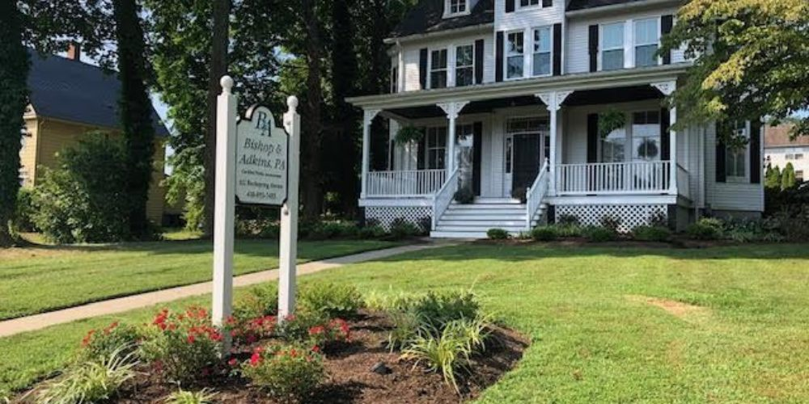

About the Firm
Three decades of tax and accounting work from one Victorian house on Rock Spring Road.
Our story
A quality full-service tax and accounting firm
Bishop & Adkins, P.A. is a registered certified public accounting firm with the Maryland State Board of Public Accountants, serving Bel Air and the surrounding Harford County communities for more than thirty years.
We provide tax compliance services for individuals — including gift tax returns — businesses of all types, trusts, estates and nonprofits. Around that core sits everything the work tends to require: tax planning and research, QuickBooks support and bookkeeping, financial statements, payroll and consulting.
Our team members’ experience ranges from basic returns to complex multi-state filings, and we are well equipped to handle rental and vacation properties, stock options and grants, and complicated investment accounts.
How we got here
A short history
1991
Rick Bishop, CPA founds the firm
Bishop & Adkins opens its doors in Bel Air, built around tax planning and preparation, business consulting and work with estates and trusts.
1995
Rob Adkins, CPA joins
Rob joins the practice, going on to become a partner three years later.
1998
Rob Adkins becomes partner
The firm takes the name it carries today.
2008
Donna Singer, CPA/PFS joins and becomes partner
Donna arrives with more than three decades of public accounting experience and Fortune 500 corporate tax background.
Today
Three partners, one office, the same block
A full-service firm serving individuals, businesses of every type, trusts, estates and nonprofits across Harford County.

The Rebecca House
Built in 1886, working since
The Bishop & Adkins office is located in the Town of Bel Air’s historic district at 612 Rock Spring Road. The Victorian house on the property was built in 1886 and is known as the Rebecca House. It now serves as the office building for the firm.
One practical note for first-time visitors: the entrance is not on Rock Spring Road. Come in from E Howard Street and follow the alley about 200 feet to the second house on the right.
What you can expect
How we work
Continuity
You are not reassigned each season. The person who prepared your return last year is very likely preparing it again.
Credentials that matter
CPAs, Enrolled Agents, Personal Financial Specialists and a CERTIFIED FINANCIAL PLANNER™ professional under one roof.
Answers when you need them
Deadlines do not move. We keep you ahead of them rather than reacting to them.
Let’s talk about your situation
Whether it’s a return, a business decision or an estate you didn’t expect to be managing, a short conversation is usually the fastest way forward.
(410) 893-7453